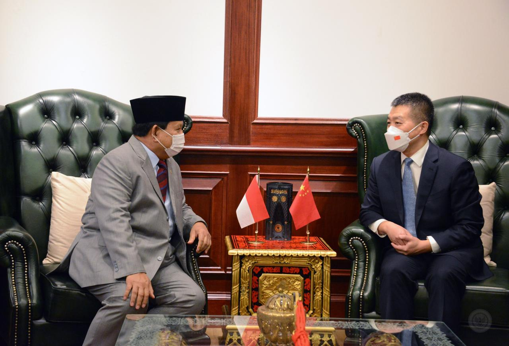

.png)

Kerjasama: Terima Dubes RRT, Menhan Prabowo Harapkan Kerja Sama Pertahanan Kedua Negara Terus Terjaga
Tujuan: Menjaga pertahanan antara kedua negara
Kasus: Menteri Pertahanan RI Prabowo Subianto menerima kunjungan Duta Besar Republik Rakyat Tiongkok H.E. Lu Kang di Kemhan, Jakarta, Jumat (8/4) dimana keduanya membahas hubungan bilateral kedua negara di bidang pertahanan, kerja sama pendidikan dan latihan, keamanan di kawasan Asia, serta peluang peningkatan kerja sama di masa yang akan datang. Pertemuan ini menjadi salah satu bukti jalinan kerja sama pertahanan yang baik antara kedua negara ini, dan diharapkan akan berlanjut dengan semangat persaudaraan dan prinsip saling menghormati. Kerja sama pertahanan RI dan RRT telah terjalin sejak 2007, didasarkan dari perjanjian yang ditandatangani di Beijing pada 7 November 2007. Indonesia dan China juga telah menjalin kerja sama bidang pertahanan dalam bentuk penyelenggaraan forum pertemuan bilateral tahunan industri pertahanan, seperti Defense Industry Cooperation Meeting (DICM) dengan ketua delegasi pejabat setingkat Direktur Jenderal, dan kerja sama beberapa perusahaan China dengan sejumlah industri pertahanan Indonesia. (Biro Humas Setjen Kemhan).